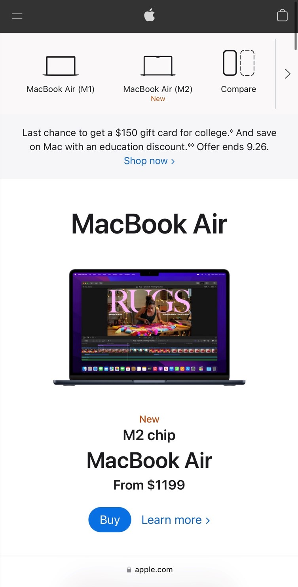
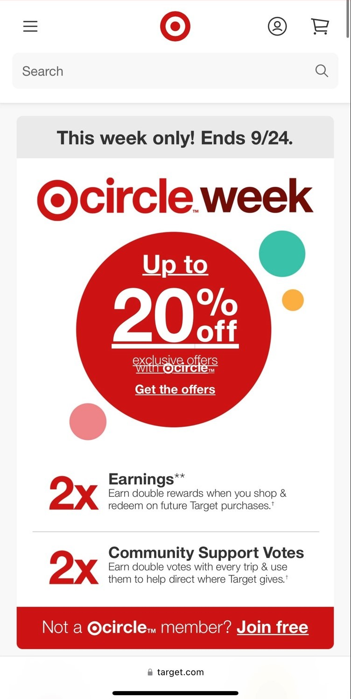

White Space
Apple
https://www.apple.com/macbook-pro/ The Apple website designers use whitespace to highlight their MacBook Air laptop. The designers did not pack a lot of information unto the screen, which gives the image of the laptop breathing room, allowing the viewer to focus on the laptop.
Contrast
Target
https://www.target.com/ The designer use contrast to steer the viewers attention to the exclusive offers at Target. By using a white background and by placing a bright red circle in the center of the screen, this created contrast, that draws attention to the red circle and highlights it.
Visual Heirarchy
Audible
https://www.audible.com/The web designers for Audible use visual heirarchy to draw the eyes to the bright orange button at the top of the screen by surrunding the button by a dark background, which makes the button appear even closer and calls the user to action. This allow the user to know where the the designer wants them to go. The website also draws your attention to the colorful, and large picture showing a variety of popular books to entice viewers to desire to peruse the website to see what new books supplies they might have.